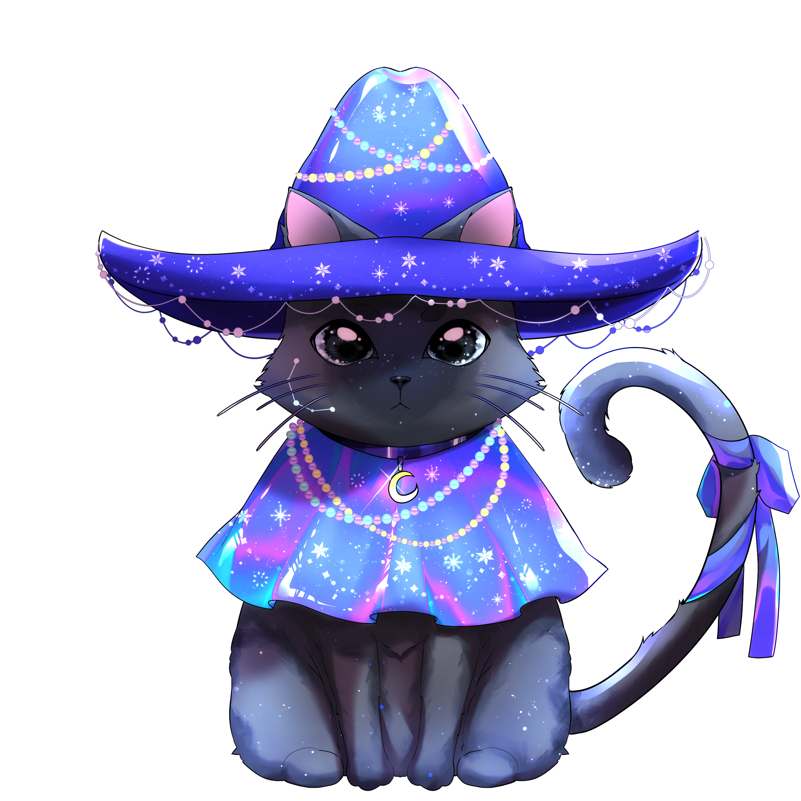

OtomeHime
Gatito
The first AI synthesized cat is here!
CV: Sugar, Lola, Koshka
Meow
Information
- Languages Meow, Purr
- Vocal Modes Standard, Deep, Sweet
- Voice Provider Sugar, Lola, Koshka
- Production keirokeer, mii-chandesu
- Sugar is l’AVErse's cat, Lola is LOP-P's cat, Koshka is OtomeHime's cat
Gatito comes from Spain, lives in space and represents LUNAI as a symbol. Hope he will become your faithful companion in music and will show you the way to space! Meow.